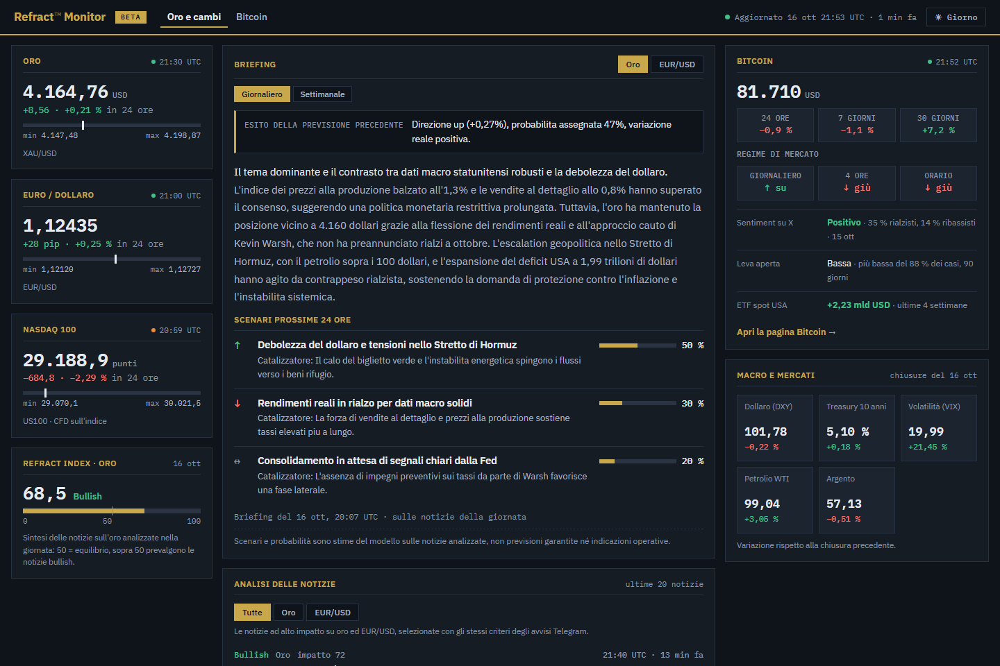

Sistema di AI-powered market intelligence che utilizza algoritmi e modelli di intelligenza artificiale specializzati per acquisire, selezionare, classificare e interpretare informazioni finanziarie, macroeconomiche e geopolitiche, generando alert selettivi e archiviando analisi strutturate, correlate al contesto di mercato e alle successive variazioni dei prezzi.
An AI-powered market intelligence system that uses specialised algorithms and artificial intelligence models to acquire, select, classify and interpret financial, macroeconomic and geopolitical information, generating selective alerts and storing structured analyses linked to the market context and to subsequent price changes.
Algoritmi avanzati e modelli di intelligenza artificiale per analizzare i trend macroeconomici e geopolitici e interpretare le dinamiche dei mercati finanziari
Advanced algorithms and artificial intelligence models to analyse macroeconomic and geopolitical trends and interpret the dynamics of financial markets
Refract Finance è un servizio di analisi e informazione sui mercati. Non fornisce consulenza personalizzata in materia di investimenti né indicazioni operative di acquisto, vendita o mantenimento di strumenti finanziari.
Refract Finance is a market analysis and information service. It does not provide personalised investment advice or operational indications to buy, sell or hold financial instruments.
Refract Finance analizza dati di mercato, notizie diffuse da fonti primarie di carattere finanziario, macroeconomico e geopolitico, unitamente a conversazioni sui social. Algoritmi, supportati da modelli di intelligenza artificiale, con ruoli separati le selezionano, le classificano e le spiegano in italiano; solo ciò che conta diventa un alert. Ogni analisi viene archiviata come record strutturato, insieme al contesto di mercato e alla reazione del prezzo nelle ore successive.
Refract Finance analyses market data, news from primary financial, macroeconomic and geopolitical sources, together with social media conversations. Algorithms, supported by artificial intelligence models with separate roles, select, classify and explain them in Italian; only what matters becomes an alert. Every analysis is stored as a structured record, together with the market context and the price reaction in the following hours.
Ogni avviso spiega il meccanismo, non solo la direzione: non «l'oro scende», ma «l'inflazione USA sopra le attese spinge al rialzo i rendimenti reali e aumenta il costo opportunità dell'oro».
Every alert explains the mechanism, not just the direction: not "gold falls", but "US inflation above expectations pushes real yields higher and raises the opportunity cost of gold".

Prezzi, Refract Index, briefing, notizie ad alto impatto e la pagina Bitcoin sono consultabili su Refract Monitor, refractmacro.com.
Prices, Refract Index, briefings, high-impact news and the Bitcoin page are available on Refract Monitor, refractmacro.com.
2 ottobre 2026 · notizia pubblicata alle 14:37, avviso alle 14:53 (ora italiana)
2 October 2026 · news published at 14:37, alert at 14:53 (Italian time)
16 settembre 2026 · comunicato della Fed alle 20:00, avviso alle 20:04 (ora italiana)
16 September 2026 · Fed release at 20:00, alert at 20:04 (Italian time)
Ogni notizia in arrivo viene letta e valutata per il mercato di riferimento; sull'oro passa all'analisi circa una su otto.
Every incoming news item is read and assessed for the relevant market; on gold about one in eight moves on to analysis.
Un agente classifica direzione, impatto, tipo di evento e meccanismo di trasmissione; un secondo scrive l'avviso a partire da quella classificazione. Chi decide non scrive, chi scrive non decide.
One agent classifies direction, impact, event type and transmission mechanism; a second one writes the alert from that classification. The one that decides does not write; the one that writes does not decide.
Soglie d'impatto, tetto giornaliero e un giudice AI che scarta le notizie che ripetono un evento già comunicato: arriva solo ciò che aggiunge qualcosa.
Impact thresholds, a daily cap and an AI judge that discards news repeating an event already reported: only what adds something gets through.
Refract usa più modelli, ciascuno scelto per il proprio compito. Dettagli nella pagina Pipeline.
Refract uses several models, each chosen for its task. Details on the Pipeline page.
dati al 16 ottobre 2026 · medie dal 15 settembre al 14 ottobre
data as of 16 October 2026 · averages 15 September to 14 October
Oggi il tempo tipico dalla pubblicazione della notizia all'avviso è di circa 15 minuti, raccolta, analisi e controlli di qualità compresi; dai comunicati ufficiali letti direttamente, come quelli della Fed, l'avviso parte in pochi minuti. È un valore attuale: fonti dirette e modelli dedicati permettono di ridurlo.
Today the typical time from publication to alert is about 15 minutes, including collection, analysis and quality checks; from official releases read directly, such as the Fed's, the alert goes out within minutes. It is a current value: direct sources and dedicated models make it possible to reduce it.
Dettagli nella pagina Pipeline.
Details on the Pipeline page.
Dal flusso delle notizie Refract costruisce segnali e ne misura la relazione con il prezzo nelle ore successive, con verifiche statistiche contro lo sguardo al futuro, il caso e la selezione a posteriori. Sull'oro la relazione è positiva per segnali fissati prima dei dati su cui sono misurati e sui primi dati successivi; gli stessi segnali possono alimentare strategie di trading algoritmico.
From the news flow Refract builds signals and measures their relation with the price over the following hours, with statistical checks against look-ahead, chance and after-the-fact selection. On gold the relation is positive for signals fixed before the data they are measured on and on the first later data; the same signals can feed algorithmic trading strategies.
Dettagli nella pagina Metodo.
Details on the Method page.
Su Bitcoin la nota del mattino nasce già così: un modello legge insieme i dati, le notizie e le conversazioni della giornata e ne scrive l'analisi, con ogni numero verificato dal codice prima della pubblicazione. Il passo successivo porta questo approccio agli altri mercati.
On Bitcoin the morning note already works this way: a model reads the day's data, news and conversations together and writes the analysis, with every number checked by code before publication. The next step brings this approach to the other markets.
In parallelo, il fine-tuning di un modello specializzato sul dataset di Refract: decine di migliaia di notizie già classificate, ciascuna legata al contesto di mercato e alla reazione del prezzo che l'ha seguita. È uno sviluppo da valutare e misurare; l'obiettivo è un modello che impari anche da come il mercato ha poi reagito, con classificazioni più coerenti sui mercati seguiti, tempi di risposta più brevi, costi per analisi più bassi e un maggiore controllo su modello e dati.
In parallel, fine-tuning a model specialised on Refract's dataset: tens of thousands of already classified news items, each linked to the market context and to the price reaction that followed. It is a development to be evaluated and measured; the goal is a model that also learns from how the market then reacted, with more consistent classifications on the markets covered, shorter response times, lower cost per analysis and greater control over model and data.
Estrazioni del dataset strutturato e accesso via API, su richiesta: info@refractmacro.com.
Structured dataset extracts and API access, on request: info@refractmacro.com.